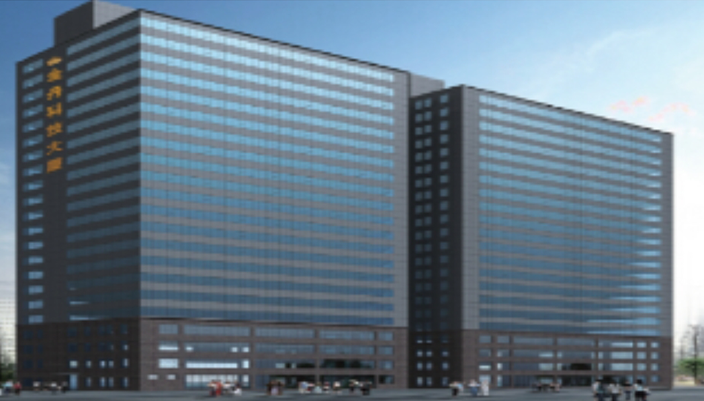

招商之金丹科技创业大厦
时间 ：2017.05.23 来源 ：招商合作局

国家级隆平高科技园位于湖南省长沙市芙蓉区东部，东起长沙县，南临浏阳河，西至京珠高速公路，北接长沙经济技术开发区，总规划面积18平方公里。园区距长沙火车站5公里，距黄花国际机场10公里，距长沙新港15公里，紧邻京珠高速公路、107国道、319国道，交通便捷，区位优势明显。园区以世界 “杂交水稻之父”、中国工程院院士袁隆平的名字命名，品牌优势突出